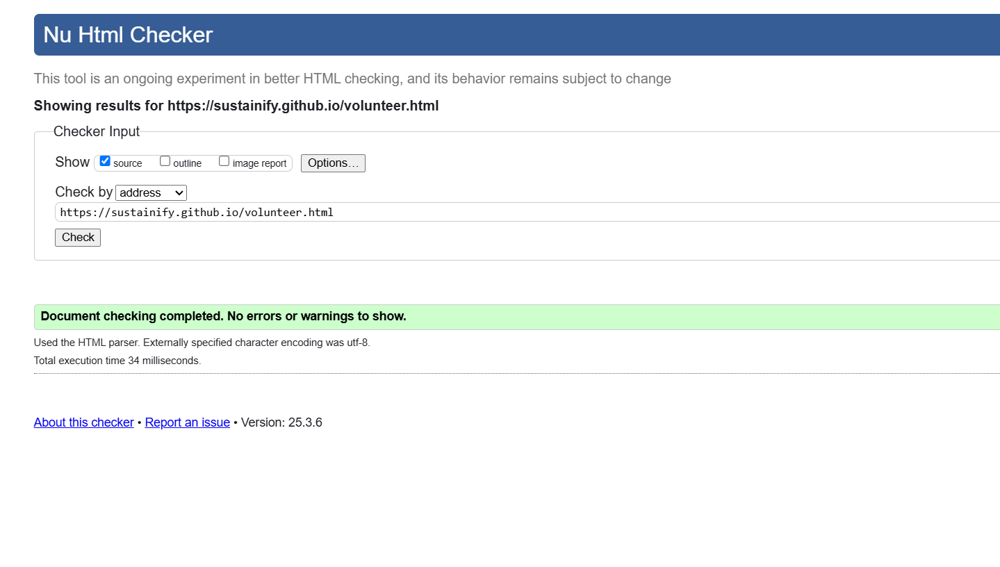
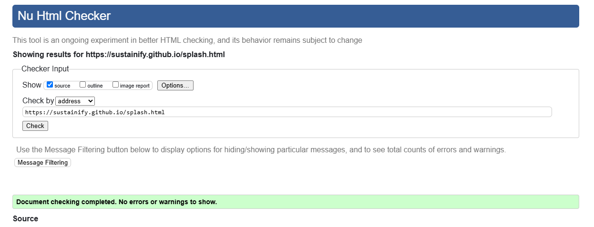
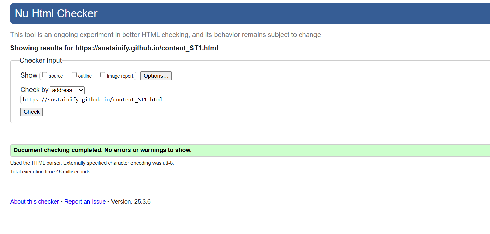

Volunteer Page validation report
A short reflection on the validation report for the pages I implemented.
Back to Page Editor page
A link back to the corresponding section of the Page Editor.
Splash screen Page validation report
A short reflection on the validation report for the pages I implemented.
Back to Page Editor page
A link back to the corresponding section of the Page Editor.
Content Page validation report
Include a short reflection on the validation report for the pages you implemented.
Back to Page Editor page
A link back to the corresponding section of the Page Editor.